ChessCoach
– Chris ButnerA neural network-based chess engine capable of natural language commentary
Data
Introduction
All self-play, training, strength testing, performance testing, and data collection has been run on newer-style v3-8 Cloud TPU VMs.
AlphaZero trained using 700,000 batches of 4,096 positions each. ChessCoach also trains using 700,000 batches of 4,096 positions each, but views this in configuration, training logs and TensorBoard charts as 5,600,000 batches (or steps) of 512 positions each. On a v3-8 TPU, the batch count is divided by the number of replicas (8), and the batch size is multiplied by the number of replicas (8). Dividing total positions sampled by total training positions available gives a sample ratio of 0.483, estimating positions per game at 135.
ChessCoach trains commentary using 50,000 batches of 4,096 positions each, configured as 400,000 batches (or steps) of 512 positions each. This covers approximately 230 epochs of the training data.
ChessCoach usually generates self-play data using the student model for prediction until 800,000 steps, training teacher and student models, and then generates self-play data using the teacher model for prediction from 800,000 to 5,600,000 steps, training only the teacher model.
In the TensorBoard charts below, and in the default configuration in config.toml, selfplay11 is the student-prediction network, selfplay11c is the teacher-prediction network, and selfplay11d is the commentary network.
Selfplay11 would normally be stopped at 800,000 steps, but its data was branched off and self-play and training was continued until 3,600,000 steps for comparison. Selfplay11c would normally start at 800,000 steps, but it was retrained from step 1 on existing data after moving to stationary policy plane mappings on 2021/08/08.
Self-play and training process
Self-play and training rely on data located at ${XDG_DATA_HOME}/ChessCoach, or failing that, at ~/.local/share/ChessCoach on Linux, and at %LOCALAPPDATA%/ChessCoach on Windows. This can also be located in Google Cloud Storage instead; for example, gs://chesscoach-eu/ChessCoach.
Set up, build and install ChessCoach, following instructions in the README.
Install validation data, using the CCRL Dataset published by Lc0 (2018), based on Computer Chess Ratings Lists (CCRL) data. This requires a 539 MiB download, 3.56 GiB disk space, and 5.86 GiB peak disk space while installing.
- Linux: Run
scripts/download_install_validation_data.sh - Windows: Run
scripts/download_install_validation_data.cmd - After running, …/ChessCoach/Games/Supervised and …/ChessCoach/Games/Validation should exist.
The Supervised directory can be deleted to save disk space if supervised training is not required. If you are customizing training, the datasets in original .pgn form can be combined, split, and repurposed, using the scrape.py and ChessCoachPgnToGames utilities as necessary.
If you would like to train the primary network but skip self-play, and/or train the commentary decoder, existing data from the ChessCoach project can be made available in the form of self-play and commentary chunks. See Training data below.
In general, the training process skips work that has already been completed, and resumes from the most recent artifacts. Therefore, when using existing self-play data, or resuming training after an interruption, configuration rarely needs to be modified.
See Distributed training and self-play in the Technical explanation for details on setting up and running ChessCoach self-play and training on a cluster on Google Cloud Platform.
Some ugly network surgery is required because the configuration system was originally intended for single-phase training with multiple rotated stages per checkpoint, rather than multiple distinct phases. However, this work is usually spread over multiple weeks of wall-clock time.
Student-prediction phase
- In config.toml, update network_name under network to selfplay11, and reinstall.
- Run
ChessCoachTrain. - Expect …/ChessCoach/Networks/selfplay11_000800000 upon completion.
Teacher-prediction phase
- In config.toml, update network_name under network to selfplay11c, and reinstall.
- Copy …/ChessCoach/Networks/selfplay11_000800000/teacher to …/ChessCoach/Networks/selfplay11c_000800000/teacher.
- Copy 3,143 self-play chunks from …/ChessCoach/Games/Fresh7 to …/ChessCoach/Games/Fresh7b.
- Run
ChessCoachTrain. - Expect …/ChessCoach/Networks/selfplay11c_005600000 upon completion.
Commentary phase
- In config.toml, update network_name under network to selfplay11d, and reinstall.
- Copy …/ChessCoach/Networks/selfplay11c_005600000/teacher/swa to …/ChessCoach/Networks/selfplay11d_000000000/teacher/model.
- Run
ChessCoachTrain. - Expect …/ChessCoach/Networks/selfplay11d_000400000 upon completion.
Wrap-up phase
- In config.toml, update network_name under network to chesscoach1, and reinstall.
- Copy …/ChessCoach/Networks/selfplay11c_005600000/teacher/swa to …/ChessCoach/Networks/chesscoach1_005600000/teacher/swa.
- Copy …/ChessCoach/Networks/selfplay11d_000400000/teacher/commentary to …/ChessCoach/Networks/chesscoach1_005600000/teacher/commentary.
Neural network weights
Neural network weights, comprising the primary model, commentary decoder, and commentary tokenizer, are located at https://github.com/chrisbutner/ChessCoachData/releases/download/v1.0.0/Data.zip. The Post-installation section of the README covers scripted installation.Neural network history
Training checkpoints and TensorBoard logs for the selfplay11, selfplay11c and selfplay11d networks can be made available. However, I still need to work out hosting details, as the data is approximately 200 GiB.Training data
Training data in the form of Fresh7 and Fresh7b self-play chunks, and commentary chunks, can be made available. However, I still need to work out hosting details, as the data is approximately 600 GiB.Strength
Tournaments
Appendix A: Raw data, tournament results
Methodology
- All engines were set to use 8 threads, 8192 MiB hash, and 3-4-5 Syzygy endgame tablebases.
- Additionally, Slow Chess Blitz 2.7 was instructed not to use its own opening book, in order to match CCRL guidelines. Compared to running with its own opening book, this improved its results against Stockfish 14, but did not affect its results against ChessCoach 1.0.0 or Igel 3.0.10.
- In ChessCoach vs. ChessCoach games spanning training history, the network_weights UCI option was used, and UCI proxying was used to allow for independent TPU device ownership.
- No arbitration was used for wins or draws, in order for the data to fully cover all game phases.
- Elo ratings were calculated using bayeselo. Stockfish 14 was pinned to 3550 Elo, using the most recent CCRL 40/15 rating for Stockfish 14 64-bit 4CPU. This configuration does not match most threads/hash and time controls below and serves as a coarse approximation.
- The data covers a limited range of engines and few total games, so ratings have very high uncertainty.
Tournament with 40 moves in 15 minutes, repeating (40/15)
- 3535 Elo rating, against Stockfish 14 (3550, pinned), Slow Chess Blitz 2.7 (3505) and Igel 3.0.10 (3487)
Tournament with 300 seconds per game plus 3 seconds increment per move (300+3, also known as 5+3)
- 3486 Elo rating, against Stockfish 14 (3550, pinned) to Stockfish 8 (3362)
Tournament with 60 seconds per game plus 0.6 seconds increment per move (60+0.6)
- 3445 Elo rating, against Stockfish 14 (3550, pinned) and training history spanning ChessCoach with 5,200,000 steps trained (3439) to ChessCoach with 400,000 steps trained (2810)
Test suites
Appendix B: Raw data, Strategic Test Suite (STS) results
Appendix C: Raw data, Arasan21 suite results
Methodology
- Test suite scoring is strict: if the search prefers the correct move for 9.9 seconds, then changes its mind for the final 0.1 seconds, it gets an incorrect score.
-
Strategic Test Suite (STS), with 1,500 positions, searching for 200 milliseconds per position:
- Run
ChessCoachStrengthTest -e "/usr/local/share/ChessCoach/StrengthTests/STS.epd" -t 200 -s 445.23 -i -242.85; take 11 measurements, recording score and rating; take median.
- Run
-
Arasan21 suite, with 199 positions, searching for 10 seconds per position:
- Run
ChessCoachStrengthTest -e "/usr/local/share/ChessCoach/StrengthTests/Arasan21.epd" -t 10000; take 5 measurements, recording score; take median.
- Run
Note that engine parameters are optimized for tournament strength, rather than for test suite scores.
Strategic Test Suite (STS)
- Score: 11,994 out of 15,000
- Rating: 3317
- Most common range is 3260 - 3350, varying with exploration and other parameters.
Arasan21 suite
- Score: 117 out of 199
- Most common range is 118 - 126, varying with exploration and other parameters.
Performance
Note that tournament play and self-play underutilize Cloud TPU VM hardware because of threading and scheduling contention and overhead in CPython and the TensorFlow Python API. However, even via Python, it is possible that improvements could be made to ChessCoach Python/C++ code or model architecture, as while experiments with CPU and GPU/TPU multiplexing showed no benefit, little overall development time was spent in this area, and no TensorFlow profiling was performed.
Search, nodes per second (NPS)
Appendix D: Raw data, search performance, nodes per second (NPS)
Methodology:
- Choose the starting position, a tactical middlegame position (r1q1k2r/1p1nbpp1/2p2np1/p1Pp4/3Pp3/P1N1P1P1/1P1B1P1P/R2QRBK1 b kq - 0 1) and an endgame position not yet in tablebases (6k1/1R5R/5p2/3P1B2/3K2P1/4rP2/r7/3n4 b - - 2 55).
- Install 3-4-5 Syzygy endgame tablebases (see the Post-installation section of the README).
-
For each position:
- Launch
ChessCoachUci. -
Run through five times:
- Run
ucinewgameto clear the search tree and prediction cache. - Run
position …,isready, andgo movetime 60000commands. - Record the final info data.
- Run
- Calculate total nodes divided by total time, truncating to thousands.
- Launch
These measurements are taken starting with an empty search tree and empty cache and reflect overall NPS, not instantaneous NPS at search completion. With 8 logical GPUs/TPUs and CPU threads, performance reaches a maximum of approximately 500,000 NPS in simple positions with cache available. However, this can include repeated visits to terminal nodes, which is a technical concession to sequential PUCT and not a useful measure. Tablebase nodes do not produce such a cutoff and are instead searched deeper.
Search performance
- 125,000 NPS in the starting position
- 68,000 NPS in a middlegame position involving a tactical sacrifice
- 141,000 NPS in an endgame position not yet in tablebases (12 pieces remaining, including kings)
Self-play
Appendix E: Raw data, self-play performance
Methodology:
- Copy …/ChessCoach/Networks/selfplay11c_005600000/teacher/swa to …/ChessCoach/Networks/benchmark1_000000000/teacher/model.
- Copy …/ChessCoach/Networks/selfplay11_003600000/student/swa to …/ChessCoach/Networks/benchmark1_000000000/student/model.
- In config.toml, update network_name under network to benchmark1.
- Teacher: in config.toml, update network_type under self_play to teacher; reinstall; delete games in local storage (for example, ~/.local/share/ChessCoach/Games/Benchmark); run
ChessCoachTrainand record 13 chunk timestamps. - Student: in config.toml, update network_type under self_play to student; reinstall; delete games in local storage (for example, ~/.local/share/ChessCoach/Games/Benchmark); run
ChessCoachTrainand record 13 chunk timestamps. - For teacher and student: take 13 chunk timestamps; calculate 12 intervals; discard first 2 intervals (short game bias); calculate mean of remaining 10 intervals.
Self-play time, teacher prediction
- 3,051 seconds per chunk of 2,000 games
- 2,360 games per hour
Self-play time, student prediction
- 1,930 seconds per chunk of 2,000 games
- 3,731 games per hour
Estimated full self-play time
- 22,000 chunks of 2,000 games each, with 18,857 using teacher prediction, 3,143 using student prediction
- Teacher prediction: 57,530,000 TPU-seconds
- Student prediction: 6,066,000 TPU-seconds
- Total on one TPU: 736 days, 2 hours, 18 minutes
- Total on 50 TPUs: 14 days, 17 hours, 20 minutes
Training
Appendix F: Raw data, training performance
Methodology:
- Record times from original selfplay11 training logs and calculate mean.
- Record times from fresh commentary training logs and calculate mean.
Training time including validation, selfplay11 teacher
- 337.0 seconds per checkpoint of 1,250 batches of 4,096 positions each (configured as 10,000 batches of 512 positions each)
Training time including validation, selfplay11 student
- 275.1 seconds per checkpoint of 1,250 batches of 4,096 positions each (configured as 10,000 batches of 512 positions each)
Training time including validation, selfplay11d (commentary)
- 931.9 seconds per checkpoint of 1,250 batches of 4,096 positions each (configured as 10,000 batches of 512 positions each)
Estimated full training time for selfplay11 (student prediction, training teacher and student)
- 100,000 batches of 4,096 positions each (configured as 800,000 batches of 512 positions each)
- 80 checkpoints of 1,250 batches each (configured as 10,000 batches each)
- 20 STS strength tests, 1 per 4 checkpoints (estimated 300 seconds per, 1500 × 200 milliseconds)
- Teacher: 26,960 seconds training + 6,000 seconds strength testing
- Student: 22,010 seconds training + 6,000 seconds strength testing
- Total: 16 hours, 56 minutes
Estimated full training time for selfplay11c (teacher prediction, training teacher only)
- 600,000 batches of 4,096 positions each (configured as 4,800,000 batches of 512 positions each)
- 480 checkpoints of 1,250 batches each (configured as 10,000 batches each)
- 120 STS strength tests, 1 per 4 checkpoints (estimated 300 seconds per)
- Teacher: 161,800 seconds training + 36,000 seconds strength testing
- Total: 54 hours, 56 minutes
Estimated full training time for selfplay11d (commentary)
- 50,000 batches of 4,096 positions each (configured as 400,000 batches of 512 positions each)
- 40 checkpoints of 1,250 batches each (configured as 10,000 batches each)
- Commentary: 37,280 seconds training
- Total: 10 hours, 21 minutes
Estimated full training time overall
- 3 days, 10 hours, 13 minutes (~3 days in parallel with self-play, ~10 hours after)
Commentary suite
Methodology:
-
COVET sampling with p = 0.1, temperature = 1.5 (variation on Nucleus (top-p) sampling)
- Run
ChessCoachGuiand click Suite button twice, recording results.
- Run
-
Nucleus (top-p) sampling with "normal" p = 0.9 ∈ [0.9, 1)
- In config.toml, update top_p under commentary from 0.1 to 0.9.
- In config.toml, update temperature under commentary from 1.5 to 1.0.
- Reinstall.
- Run
ChessCoachGuiand click Suite button twice, recording results.
-
Beam search with default beam size = 4, length normalization α = 0.6 ∈ [0.6, 0.7]
- Revert changes in py/transformer.py from commit 62a63a73.
- Revert changes in py/transformer.py from commit 035e7e64.
- Remove sample_temperature and top_p argument passing in model.py.
- Reinstall.
- Run
ChessCoachGuiand click Suite button twice, recording results.
The following table gives a sample of ChessCoach's natural language commentary generation, using the primary neural network and the commentary decoder neural network. Ten outputs are given for each of three different sampling methods. This is repeated for eleven different positions and corresponding moves, comprising ChessCoach's commentary test suite.
Note that the commentary test suite uses a non-optimal method of input, providing FENs for the before and after-positions rather than full move history, requiring synthesis of history planes. When full position history is available, for example, with a position startpos moves … UCI command, commentary may be improved, for piece and square identification especially.
| 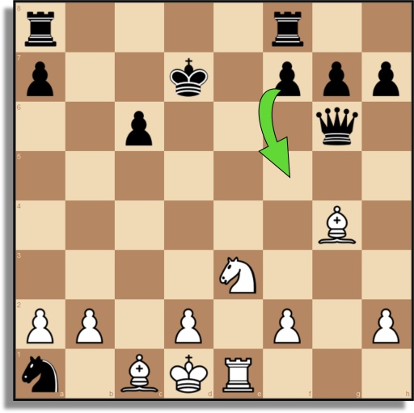 |
Baseline (Jhamtani, Gangal, Hovy, Neubig & Berg-Kirkpatrick, 2018)
|
| 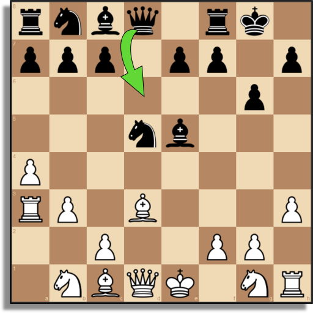 |
Baseline (Jhamtani, Gangal, Hovy, Neubig & Berg-Kirkpatrick, 2018)
|
| 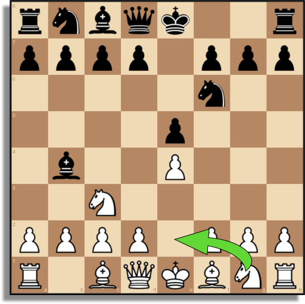 |
Baseline (Zang, Yu & Wan, 2019)
|
| 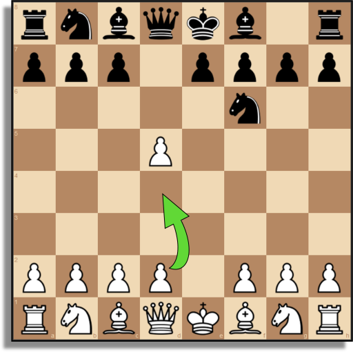 |
Baseline (Zang, Yu & Wan, 2019)
|
| 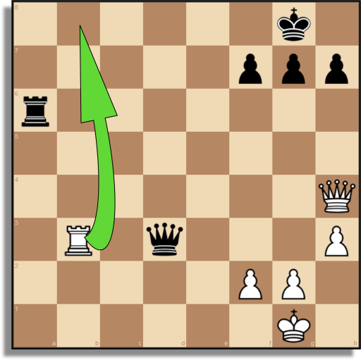 |
Baseline
|
| 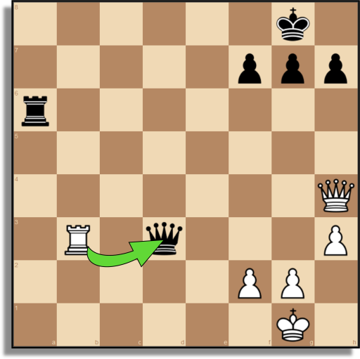 |
Baseline
|
| 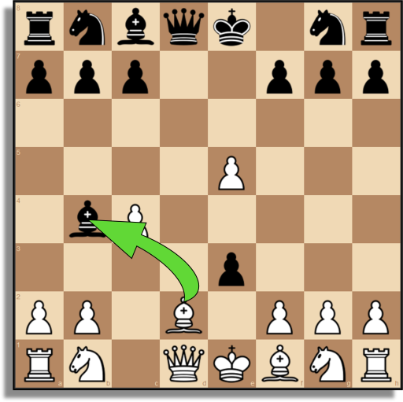 |
Baseline
|
| 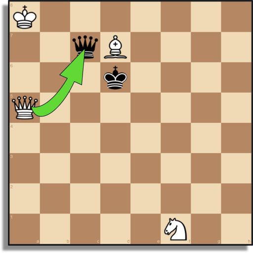 |
Baseline
|
| 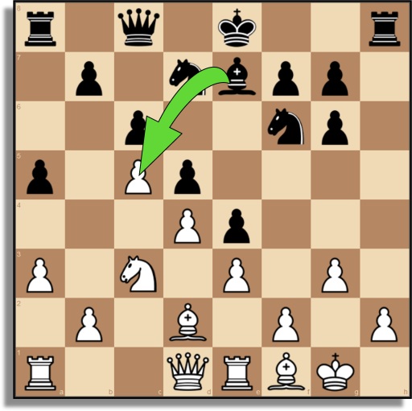 |
Baseline (position only from Arasan21 suite (Dart, 2019))
|
| 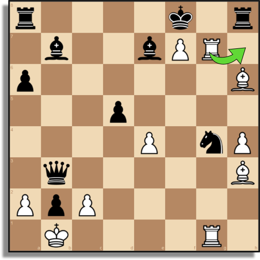 |
Baseline (Stapczynski, 2020)
|
| 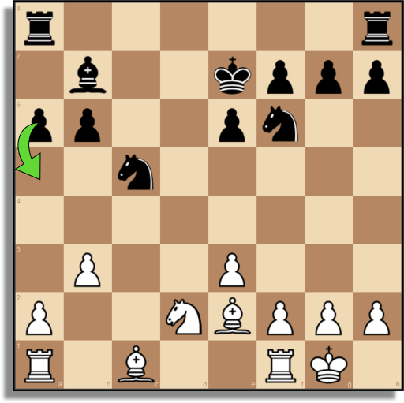 |
Baseline (raskerino, 2020)
|
Training charts
Note that selfplay11 shown in the charts below used non-stationary policy plane mappings and only generated SWA models for the student model at the time, not the teacher model. The lack of SWA on the selfplay11 teacher model reduces STS rating estimation by approximately 50 to 100 Elo in early training. Configuration has since been updated to generate SWA for the selfplay11 teacher also.
In contrast, selfplay11c was fully retrained on existing data using stationary policy plane mappings after 2021/08/08. SWA models were always generated. Little difference was seen between non-stationary and stationary policy plane mappings, although a fresh end-to-end run may show improvement, owing to the feedback cycle.
Selfplay11 and selfplay11c: Elo rating estimation from the Strategic Test Suite (STS)
Selfplay11: Value and policy
Selfplay11c: Value and policy
Selfplay11 and selfplay11c: MCTS value loss (before auxiliary x0.15), L2 regularization loss, and learning rate
Selfplay11d: Commentary loss and learning rate
Appendix A: Raw data, tournament results
40 moves in 15 minutes, repeating (40/15)
20210915_40_15.pgn (180 games)
| Engine | Elo rating |
|---|---|
| Stockfish 14 | 3550 |
| ChessCoach 1.0.0 | 3535 |
| Slow Chess Blitz 2.7 | 3505 |
| Igel 3.0.10 | 3487 |
| Engine | Opponent | Wins, losses, draws | Score |
|---|---|---|---|
| Stockfish 14 | ChessCoach 1.0.0 | 0 - 0 - 30 | 15.0 : 15.0 |
| Slow Chess Blitz 2.7 | 7 - 0 - 23 | 18.5 : 11.5 | |
| Igel 3.0.10 | 8 - 0 - 22 | 19.0 : 11.0 | |
| ChessCoach 1.0.0 | Slow Chess Blitz 2.7 | 0 - 0 - 30 | 15.0 : 15.0 |
| Igel 3.0.10 | 8 - 0 - 22 | 19.0 : 11.0 | |
| Slow Chess Blitz 2.7 | Igel 3.0.10 | 0 - 0 - 30 | 15.0 : 15.0 |
300 seconds per game plus 3 seconds increment per move (300+3, also known as 5+3)
20210915_300_3.pgn (840 games)
| Engine | Elo rating |
|---|---|
| Stockfish 14 | 3550 |
| Stockfish 13 | 3538 |
| Stockfish 12 | 3520 |
| ChessCoach 1.0.0 | 3486 |
| Stockfish 11 | 3450 |
| Stockfish 10 | 3393 |
| Stockfish 9 | 3380 |
| Stockfish 8 | 3362 |
| Engine | Opponent | Wins, losses, draws | Score |
|---|---|---|---|
| Stockfish 14 | Stockfish 13 | 2 - 0 - 28 | 16.0 : 14.0 |
| Stockfish 12 | 2 - 0 - 28 | 16.0 : 14.0 | |
| ChessCoach 1.0.0 | 3 - 0 - 27 | 16.5 : 13.5 | |
| Stockfish 11 | 12 - 0 - 18 | 21.0 : 9.0 | |
| Stockfish 10 | 22 - 0 - 8 | 26.0 : 4.0 | |
| Stockfish 9 | 16 - 0 - 14 | 23.0 : 7.0 | |
| Stockfish 8 | 15 - 0 - 15 | 22.5 : 7.5 | |
| Stockfish 13 | Stockfish 12 | 1 - 0 - 29 | 15.5 : 14.5 |
| ChessCoach 1.0.0 | 1 - 0 - 29 | 15.5 : 14.5 | |
| Stockfish 11 | 13 - 0 - 17 | 21.5 : 8.5 | |
| Stockfish 10 | 20 - 1 - 9 | 24.5 : 5.5 | |
| Stockfish 9 | 15 - 0 - 15 | 22.5 : 7.5 | |
| Stockfish 8 | 15 - 0 - 15 | 22.5 : 7.5 | |
| Stockfish 12 | ChessCoach 1.0.0 | 0 - 1 - 29 | 14.5 : 15.5 |
| Stockfish 11 | 8 - 0 - 22 | 19.0 : 11.0 | |
| Stockfish 10 | 16 - 0 - 14 | 23.0 : 7.0 | |
| Stockfish 9 | 14 - 1 - 15 | 21.5 : 8.5 | |
| Stockfish 8 | 15 - 0 - 15 | 22.5 : 7.5 | |
| ChessCoach 1.0.0 | Stockfish 11 | 3 - 2 - 25 | 15.5 : 14.5 |
| Stockfish 10 | 8 - 3 - 19 | 17.5 : 12.5 | |
| Stockfish 9 | 8 - 5 - 17 | 16.5 : 13.5 | |
| Stockfish 8 | 13 - 0 - 17 | 21.5 : 8.5 | |
| Stockfish 11 | Stockfish 10 | 6 - 2 - 22 | 17.0 : 13.0 |
| Stockfish 9 | 12 - 0 - 18 | 21.0 : 9.0 | |
| Stockfish 8 | 10 - 0 - 20 | 20.0 : 10.0 | |
| Stockfish 10 | Stockfish 9 | 8 - 2 - 20 | 18.0 : 12.0 |
| Stockfish 8 | 9 - 0 - 21 | 19.5 : 10.5 | |
| Stockfish 9 | Stockfish 8 | 2 - 0 - 28 | 16.0 : 14.0 |
60 seconds per game plus 0.6 seconds increment per move (60+0.6)
20210915_60_06.pgn (3,150 games)
| Engine | Elo rating |
|---|---|
| Stockfish 14 | 3550 |
| ChessCoach 1.0.0 5.6m | 3445 |
| ChessCoach 1.0.0 5.2m | 3439 |
| ChessCoach 1.0.0 4.8m | 3426 |
| ChessCoach 1.0.0 4.4m | 3422 |
| ChessCoach 1.0.0 4.0m | 3425 |
| ChessCoach 1.0.0 3.6m | 3405 |
| ChessCoach 1.0.0 3.2m | 3419 |
| ChessCoach 1.0.0 2.8m | 3398 |
| ChessCoach 1.0.0 2.4m | 3354 |
| ChessCoach 1.0.0 2.0m | 3327 |
| ChessCoach 1.0.0 1.6m | 3313 |
| ChessCoach 1.0.0 1.2m | 3291 |
| ChessCoach 1.0.0 0.8m | 2978 |
| ChessCoach 1.0.0 0.4m | 2810 |
| Engine | Opponent | Wins, losses, draws | Score |
|---|---|---|---|
| Stockfish 14 | ChessCoach 1.0.0 5.6m | 10 - 0 - 20 | 20.0 : 10.0 |
| ChessCoach 1.0.0 5.2m | 8 - 0 - 22 | 19.0 : 11.0 | |
| ChessCoach 1.0.0 4.8m | 14 - 0 - 16 | 22.0 : 8.0 | |
| ChessCoach 1.0.0 4.4m | 14 - 0 - 16 | 22.0 : 8.0 | |
| ChessCoach 1.0.0 4.0m | 13 - 0 - 17 | 21.5 : 8.5 | |
| ChessCoach 1.0.0 3.6m | 18 - 0 - 12 | 24.0 : 6.0 | |
| ChessCoach 1.0.0 3.2m | 17 - 0 - 13 | 23.5 : 6.5 | |
| ChessCoach 1.0.0 2.8m | 15 - 0 - 15 | 22.5 : 7.5 | |
| ChessCoach 1.0.0 2.4m | 18 - 0 - 12 | 24.0 : 6.0 | |
| ChessCoach 1.0.0 2.0m | 21 - 0 - 9 | 25.5 : 4.5 | |
| ChessCoach 1.0.0 1.6m | 15 - 0 - 15 | 22.5 : 7.5 | |
| ChessCoach 1.0.0 1.2m | 21 - 0 - 9 | 25.5 : 4.5 | |
| ChessCoach 1.0.0 0.8m | 29 - 0 - 1 | 29.5 : 0.5 | |
| ChessCoach 1.0.0 0.4m | 30 - 0 - 0 | 30 : 0 |
Appendix B: Raw data, Strategic Test Suite (STS) results
Score: 12022 out of 15000 Rating: 3325 Score: 11990 out of 15000 Rating: 3316 Score: 11971 out of 15000 Rating: 3310 Score: 11968 out of 15000 Rating: 3309 Score: 11998 out of 15000 Rating: 3318 Score: 11994 out of 15000 Rating: 3317 Score: 11997 out of 15000 Rating: 3318 Score: 11949 out of 15000 Rating: 3303 Score: 11995 out of 15000 Rating: 3317 Score: 12014 out of 15000 Rating: 3323 Score: 11960 out of 15000 Rating: 3307
Appendix C: Raw data, Arasan21 suite results
Score: 119 out of 199 Score: 115 out of 199 Score: 117 out of 199 Score: 116 out of 199 Score: 119 out of 199
Appendix D: Raw data, search performance, nodes per second (NPS)
Note that the depth that ChessCoach prints is just the length of the principal variation, which may be higher or lower than the best approximation of classical depth when the search finishes.
Starting position
info depth 25 score cp 15 nodes 7731270 nps 128700 tbhits 0 time 60071 hashfull 37 pv d2d4 g8f6 c2c4 e7e6 g2g3 f8b4 b1d2 e8g8 f1g2 d7d5 g1f3 b7b6 e1g1 c8b7 b2b3 b8d7 c1b2 a8c8 f3e5 c7c5 a2a3 b4d2 d1d2 c5d4 d2d4 info depth 22 score cp 15 nodes 7537754 nps 125556 tbhits 0 time 60034 hashfull 39 pv d2d4 g8f6 c2c4 e7e6 b1c3 f8b4 g1f3 b7b6 d1b3 a7a5 g2g3 h7h6 f1g2 c8b7 e1g1 e8g8 f1d1 f8e8 c3a4 b4f8 a4c3 f8b4 info depth 22 score cp 15 nodes 7547549 nps 125682 tbhits 0 time 60052 hashfull 39 pv d2d4 g8f6 c2c4 e7e6 b1c3 f8b4 g1f3 b7b6 d1b3 a7a5 g2g3 h7h6 f1g2 c8b7 e1g1 e8g8 f1d1 f8e8 c3a4 b4f8 a4c3 f8b4 info depth 22 score cp 15 nodes 7314811 nps 121834 tbhits 0 time 60038 hashfull 37 pv d2d4 g8f6 c2c4 e7e6 b1c3 f8b4 g1f3 b7b6 d1b3 a7a5 g2g3 h7h6 f1g2 c8b7 e1g1 e8g8 f1d1 f8e8 c3a4 b4f8 a4c3 f8b4 info depth 29 score cp 15 nodes 7507158 nps 125058 tbhits 0 time 60029 hashfull 37 pv d2d4 g8f6 c2c4 e7e6 g2g3 f8b4 b1d2 e8g8 f1g2 d7d5 g1f3 b7b6 f3e5 c8b7 e1g1 a7a5 d2b1 b8d7 c1g5 b4e7 b1c3 c7c6 a1c1 d7e5 d4e5 f6d7 g5e7 d8e7 c4d5
Middlegame position
r1q1k2r/1p1nbpp1/2p2np1/p1Pp4/3Pp3/P1N1P1P1/1P1B1P1P/R2QRBK1 b kq - 0 1
info depth 42 score cp 138 nodes 3933660 nps 65510 tbhits 0 time 60046 hashfull 36 pv e7c5 b2b4 c5e7 b4a5 d7f8 a1b1 f8e6 f1g2 e6g5 h2h4 g5h3 g1f1 g6g5 d1b3 c8f5 e1e2 e7d6 b3b7 e8g8 h4g5 h3g5 b7c6 d6g3 b1b5 a8d8 a5a6 g5f3 f2g3 f3d4 e2f2 f5f2 f1f2 d4c6 b5b6 c6e5 c3b5 e5c4 b6b7 c4d2 a6a7 d2c4 b5c7 info depth 32 score cp 138 nodes 4095336 nps 68219 tbhits 0 time 60031 hashfull 36 pv e7c5 b2b4 c5e7 b4a5 d7f8 a1b1 f8e6 f1g2 a8a7 c3e2 g6g5 d2b4 g5g4 b4e7 e8e7 d1b3 f6e8 a5a6 b7b5 a3a4 b5a4 b3a4 a7a6 a4b4 e8d6 b1a1 c8a8 a1a6 a8a6 e2f4 e6f4 g3f4 info depth 33 score cp 137 nodes 4011045 nps 66812 tbhits 0 time 60034 hashfull 36 pv e7c5 f2f3 e4f3 d1f3 c5a7 g3g4 c8c7 e1e2 g6g5 a1c1 c7d6 f3f5 d6e6 f5g5 f6g4 e2g2 g4f6 f1d3 g7g6 c3e2 a7b8 e2f4 e6e7 c1f1 b8d6 d3g6 h8g8 g6f7 e7f7 g5g8 f6g8 f4d5 f7d5 info depth 40 score cp 136 nodes 4176532 nps 69569 tbhits 0 time 60034 hashfull 37 pv e7c5 f2f3 e4f3 d1f3 c5a7 a1d1 e8g8 g3g4 f6h7 h2h4 h7f6 f1d3 d7b6 g4g5 f6h5 c3e2 b6c4 d3c4 d5c4 d2a5 a7d4 a5b4 c6c5 d1d4 c5d4 b4f8 c8f8 e2d4 f8e7 e1c1 a8c8 c1c3 c8c5 a3a4 g8h7 g1f2 e7c7 f2e1 h5g3 f3f4 info depth 30 score cp 137 nodes 4253002 nps 70827 tbhits 0 time 60047 hashfull 37 pv e7c5 f2f3 e4f3 d1f3 c5b6 a1d1 e8f8 g3g4 c8c7 h2h3 a8e8 f1d3 f8g8 g4g5 f6h7 h3h4 h7f8 e1f1 f7f5 d2e1 c7d8 e1g3 b6c7 c3e2 f8e6 b2b4 a5b4 a3b4 c7g3 f3g3
Endgame position
6k1/1R5R/5p2/3P1B2/3K2P1/4rP2/r7/3n4 b - - 2 55
info depth 16 score cp -1245 nodes 8486337 nps 141314 tbhits 837 time 60052 hashfull 38 pv a2a4 d4c5 a4a5 c5b4 a5a8 f5e6 e3e6 d5e6 a8a4 b4a4 d1b2 a4b5 b2d1 h7d7 d1c3 b5c4 info depth 17 score cp -1248 nodes 8564029 nps 142673 tbhits 832 time 60025 hashfull 38 pv a2a4 d4c5 a4a5 c5b4 a5a8 f5e6 e3e6 d5e6 a8a4 b4a4 d1b2 a4b5 b2d1 h7d7 d1c3 b5c4 c3a4 info depth 17 score cp -1245 nodes 8624577 nps 143608 tbhits 834 time 60056 hashfull 39 pv a2a4 d4c5 a4a5 c5b4 a5a8 f5e6 e3e6 d5e6 a8a4 b4a4 d1b2 a4b5 b2d1 h7d7 d1c3 b5c4 c3a4 info depth 17 score cp -1245 nodes 8468469 nps 141060 tbhits 821 time 60034 hashfull 38 pv a2a4 d4c5 a4a5 c5b4 a5a8 f5e6 e3e6 d5e6 a8a4 b4a4 d1c3 a4b3 c3d5 h7d7 d5e7 d7e7 f6f5 info depth 17 score cp -1246 nodes 8270744 nps 137733 tbhits 836 time 60048 hashfull 37 pv a2a4 d4c5 a4a5 c5b4 a5a8 f5e6 e3e6 d5e6 a8a4 b4a4 d1b2 a4b5 b2d1 h7d7 d1c3 b5c4 c3a4
Appendix E: Raw data, self-play performance
Teacher prediction, fresh self-play data, using selfplay11c_005600000/teacher/swa
20210902_082950_816_B03CF7CA_000000001.chunk 20210902_092148_523_B03CF7CA_000000002.chunk 20210902_101529_321_B03CF7CA_000000003.chunk 20210902_110617_064_B03CF7CA_000000004.chunk 20210902_115610_860_B03CF7CA_000000005.chunk 20210902_124654_558_B03CF7CA_000000006.chunk 20210902_133825_162_B03CF7CA_000000007.chunk 20210902_142737_455_B03CF7CA_000000008.chunk 20210902_151941_470_B03CF7CA_000000009.chunk 20210902_161050_486_B03CF7CA_000000010.chunk 20210902_170249_091_B03CF7CA_000000011.chunk 20210902_175305_095_B03CF7CA_000000012.chunk 20210902_184401_396_B03CF7CA_000000013.chunk
Student prediction, fresh self-play data, using selfplay11_003600000/student/swa
20210902_000911_997_CDF008BB_000000001.chunk 20210902_004411_362_CDF008BB_000000002.chunk 20210902_011431_200_CDF008BB_000000003.chunk 20210902_014551_067_CDF008BB_000000004.chunk 20210902_021811_270_CDF008BB_000000005.chunk 20210902_025115_993_CDF008BB_000000006.chunk 20210902_032231_690_CDF008BB_000000007.chunk 20210902_035354_835_CDF008BB_000000008.chunk 20210902_042625_242_CDF008BB_000000009.chunk 20210902_045954_545_CDF008BB_000000010.chunk 20210902_053224_662_CDF008BB_000000011.chunk 20210902_060450_010_CDF008BB_000000012.chunk 20210902_063607_272_CDF008BB_000000013.chunk
Appendix F: Raw data, training performance
Selfplay11 teacher
Trained steps 3000001-3010000, total time 374.065, step time 0.0374065 Trained steps 3010001-3020000, total time 369.948, step time 0.0369948 Trained steps 3020001-3030000, total time 533.027, step time 0.0533027 Trained steps 3030001-3040000, total time 319.813, step time 0.0319813 Trained steps 3040001-3050000, total time 329.212, step time 0.0329212 Trained steps 3050001-3060000, total time 303.816, step time 0.0303816 Trained steps 3060001-3070000, total time 302.458, step time 0.0302458 Trained steps 3070001-3080000, total time 298.395, step time 0.0298395 Trained steps 3080001-3090000, total time 331.418, step time 0.0331418 Trained steps 3090001-3100000, total time 315.599, step time 0.0315599 Trained steps 3100001-3110000, total time 322.777, step time 0.0322777 Trained steps 3110001-3120000, total time 316.692, step time 0.0316692 Trained steps 3120001-3130000, total time 315.867, step time 0.0315867 Trained steps 3130001-3140000, total time 308.975, step time 0.0308975 Trained steps 3140001-3150000, total time 318.309, step time 0.0318309 Trained steps 3150001-3160000, total time 317.987, step time 0.0317987 Trained steps 3160001-3170000, total time 334.9, step time 0.03349 Trained steps 3170001-3180000, total time 342.504, step time 0.0342504 Trained steps 3180001-3190000, total time 354.754, step time 0.0354754 Trained steps 3190001-3200000, total time 329.453, step time 0.0329453
Selfplay11 student
Trained steps 3000001-3010000, total time 281.451, step time 0.0281451 Trained steps 3010001-3020000, total time 285.581, step time 0.0285581 Trained steps 3020001-3030000, total time 355.919, step time 0.0355919 Trained steps 3030001-3040000, total time 272.08, step time 0.027208 Trained steps 3040001-3050000, total time 263.388, step time 0.0263388 Trained steps 3050001-3060000, total time 261.446, step time 0.0261446 Trained steps 3060001-3070000, total time 251.013, step time 0.0251013 Trained steps 3070001-3080000, total time 256.01, step time 0.025601 Trained steps 3080001-3090000, total time 263.746, step time 0.0263746 Trained steps 3090001-3100000, total time 258.114, step time 0.0258114 Trained steps 3100001-3110000, total time 267.097, step time 0.0267097 Trained steps 3110001-3120000, total time 274.047, step time 0.0274047 Trained steps 3120001-3130000, total time 270.588, step time 0.0270588 Trained steps 3130001-3140000, total time 271.816, step time 0.0271816 Trained steps 3140001-3150000, total time 269.123, step time 0.0269123 Trained steps 3150001-3160000, total time 267.029, step time 0.0267029 Trained steps 3160001-3170000, total time 280.487, step time 0.0280487 Trained steps 3170001-3180000, total time 315.979, step time 0.0315979 Trained steps 3180001-3190000, total time 277.471, step time 0.0277471 Trained steps 3190001-3200000, total time 259.324, step time 0.0259324
Commentary, fresh run
Trained commentary steps 10001-20000, total time 931.68, step time 0.093168 Trained commentary steps 20001-30000, total time 935.3, step time 0.09353 Trained commentary steps 30001-40000, total time 936.939, step time 0.0936939 Trained commentary steps 40001-50000, total time 931.887, step time 0.0931887 Trained commentary steps 50001-60000, total time 927.141, step time 0.0927141 Trained commentary steps 60001-70000, total time 930.331, step time 0.0930331 Trained commentary steps 70001-80000, total time 929.892, step time 0.0929892 Trained commentary steps 80001-90000, total time 931.536, step time 0.0931536 Trained commentary steps 90001-100000, total time 930.682, step time 0.0930682 Trained commentary steps 100001-110000, total time 934.055, step time 0.0934055